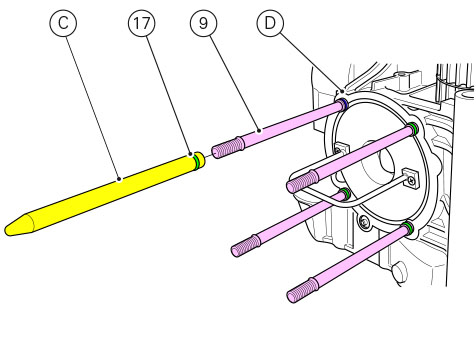
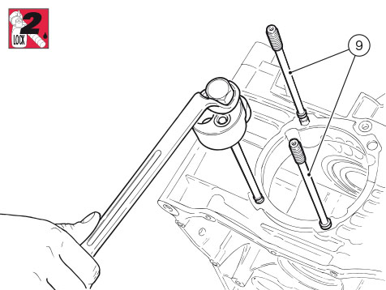

Check the conditions of O-rings (17) of stud bolts (9) and replace them if necessary.
Use tool (C) no. 88713.1920 to fit the O-rings (17) in the corresponding seats (D) of the stud bolts (9).

Now fit the stud bolts (9) in the crankcase halves, applying sealant on the thread and tightening to a torque of 30 Nm (Min.
28 Nm - Max. 32 Nm).
Use the appropriate commercial tool for this operation.

If previously removed, apply specified threadlocker on dowel (18) and tighten it to 15 Nm (Min. 13.5 Nm - Max. 16.5 Nm), fit
gasket (19) on service plug (20): the gasket must be oriented so that the square edge faces the clutch-side crankcase half.
Apply specified threadlocker on the plug thread (20), insert it in the crankcase half and tighten to a torque of 15 Nm (Min.
13 Nm - Max. 17 Nm).